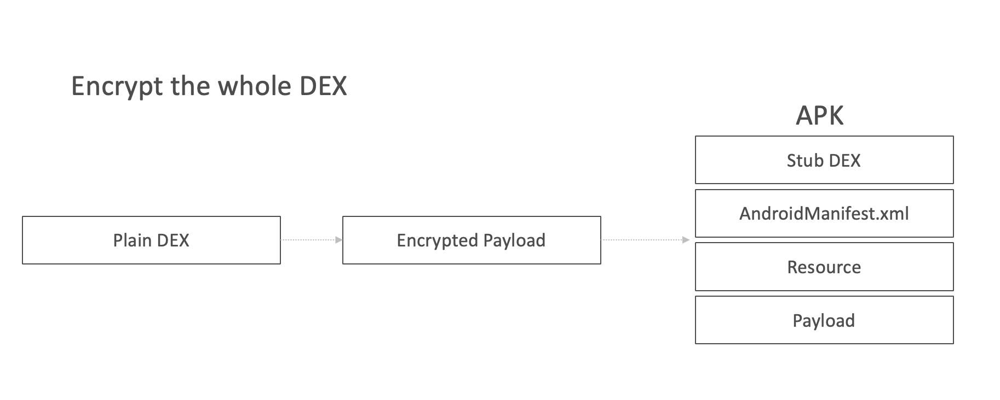
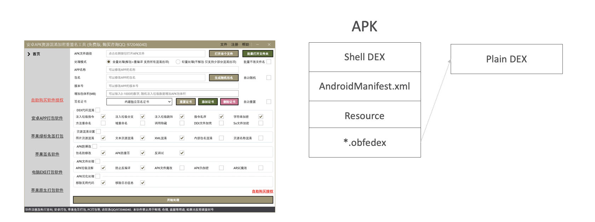
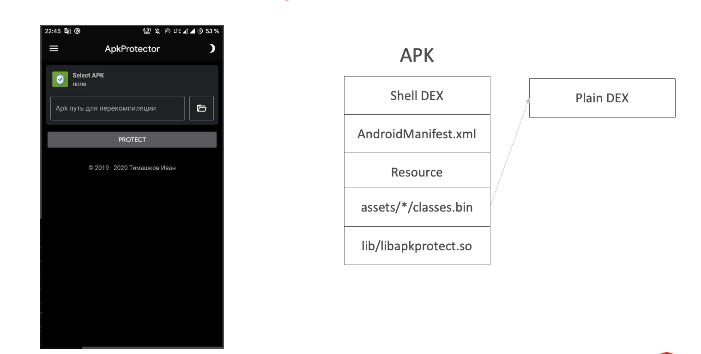
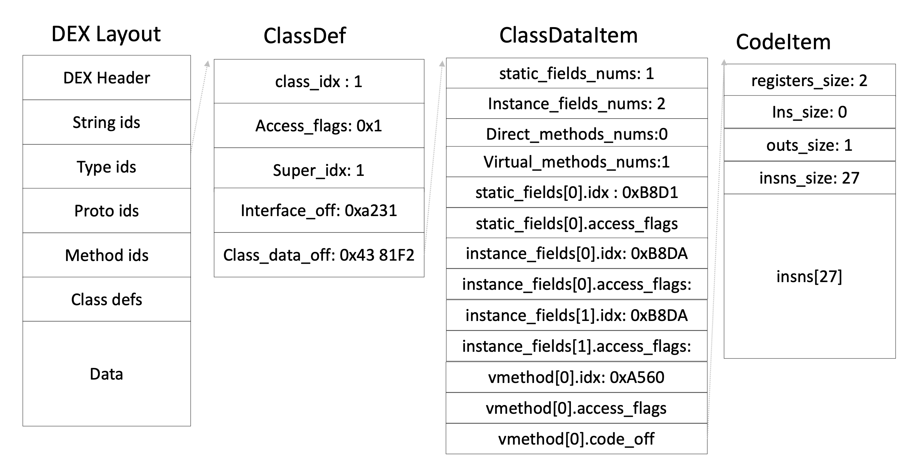
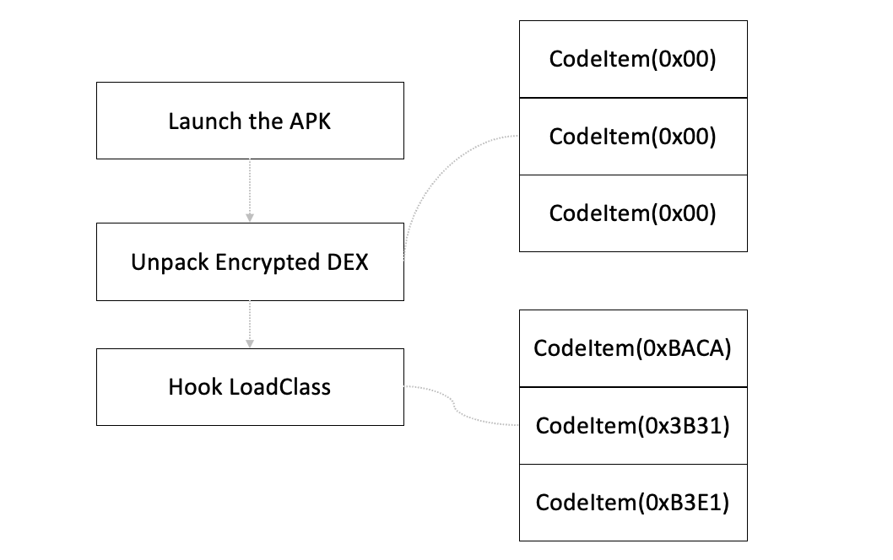
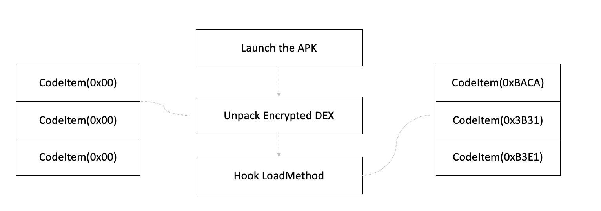
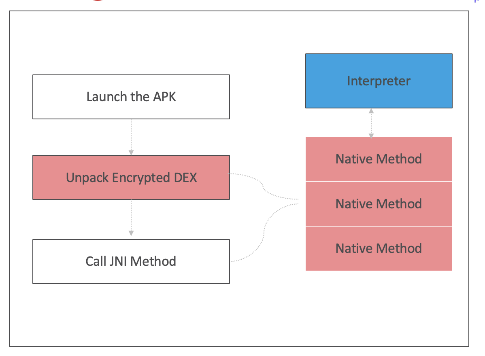
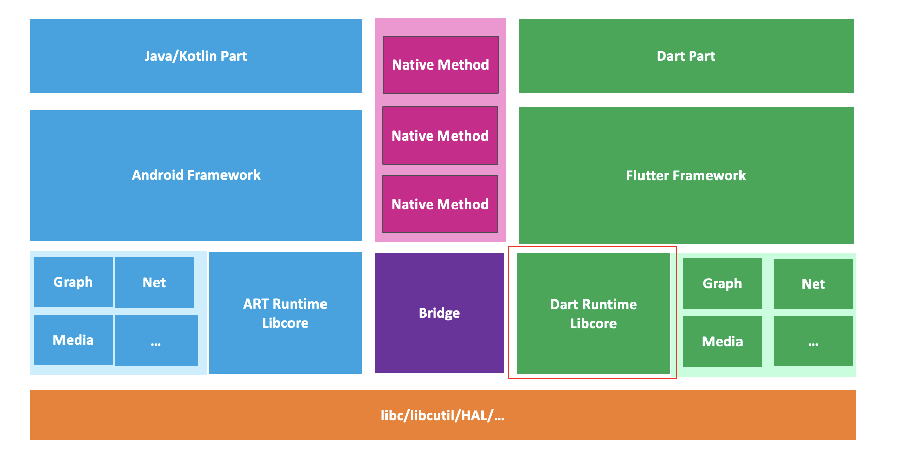

Android Packer
第一代壳 （Dex 整体加密壳）
一代壳，这是最早的Android加壳技术，其主要方法是将原始的.dex文件进行加密，然后在应用中添加一个新的类（通常称为"stub"或"loader"）来在运行时解密和加载这个.dex文件。这种方法可以有效防止静态分析，但对动态分析的防护较弱。应用启动后，壳代码会在运行时将加密的 Dex 解密到内存中，再通过自定义 ClassLoader 或反射机制加载真实业务代码。
该方案可以有效阻断纯静态分析，但由于解密逻辑通常位于 Java 层或简单 Native 层，对 动态分析与内存 dump 的防护能力较弱。
技术特征：
- 对整个 Dex 文件进行加密
- 加密后的 Payload 直接嵌入 APK 中（assets / raw / 自定义 section）
- 运行时一次性解密并加载
常见形态：
-
APK 资源混淆 + Dex 加密 + 重签名工具

-
安卓APK资源混淆加密重签名工具

-
ApkProtector

第二代壳
第二代 Android 壳在对抗逆向方面引入了更精细化的策略，不再简单地对整个 Dex 做整体加密，而是深入到 Dex 内部结构，对 Method 的 CodeItem 做手脚。
典型做法是：
- 将 Method 中的指令字节码抽离并加密，存放在外部区域
- 原始 Dex 中的 Method 仅保留空实现或填充
nop指令 - 在 Method 被调用时，运行时动态解密真实指令并执行
解密和执行逻辑通常下沉到 Native 层（.so），并配合 JNI、反调试、代码混淆等手段，显著提高分析成本。
技术特征：
- 操作 Dex 内部
CodeItem - Java 层看到的是“空方法”或异常逻辑
- 真实指令在 Native 层按需解密
.so文件本身高度混淆、反调试
Dex 结构示意：
-
二代壳通常会对Dex中的CodeItem做手脚，以下是DEX的结构

-
某固壳

-
dpt-shell

第三代壳
第三代 Android 壳通常被称为 VMP（Virtual Machine Protection）壳，其核心思想是：
将原始代码转换为自定义的“虚拟指令集”，并在壳内置的虚拟机中解释执行。
在这种模式下：
- 真实业务逻辑不再以 Dalvik / ART 指令形式存在
- 逆向分析者只能看到复杂的 VM 调度逻辑
- 每家壳厂商的虚拟指令集和 VM 实现均不相同
第三代壳往往会 叠加前两代壳的能力，同时结合：
- 控制流平坦化（CFF）
- 字符串 / 常量虚拟化
- 反调试、反 Hook、反模拟器
1. 自定义虚拟机壳
典型方案是将 Java / Native 代码转换为 VM 指令，由自研虚拟机执行。
- jiagu packer

2. 自带虚拟机的跨平台应用
非Java,Kotlin开发的app，如Flutter(Dart), ReactNative(JS), Unity(C#)，Xamarin(C#)都是自带虚拟机
严格来说，这类应用并非传统意义上的“加壳”，但从逆向分析视角看，其效果与 VMP 壳非常接近。
